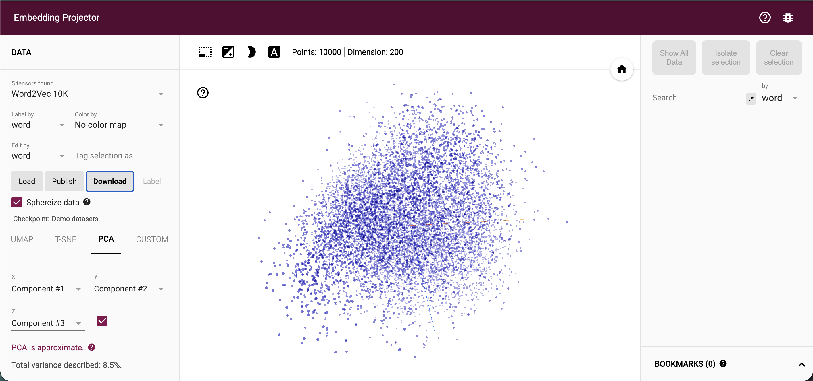
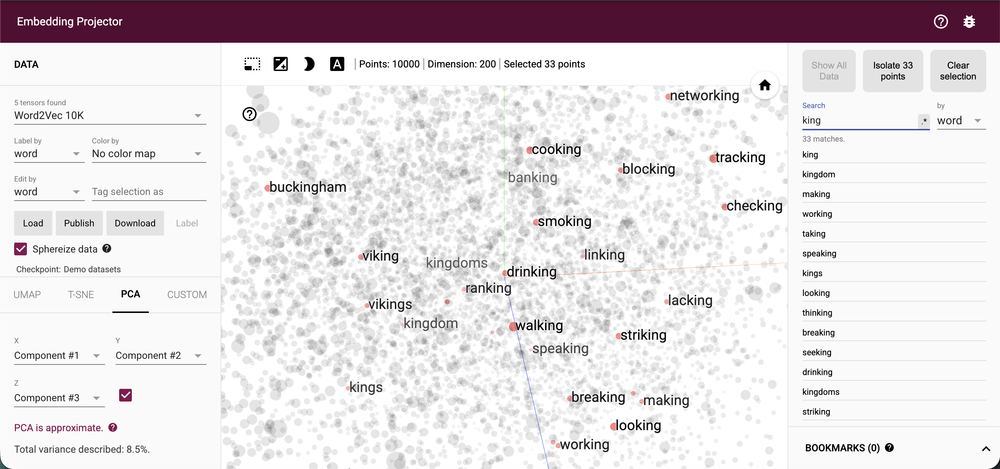
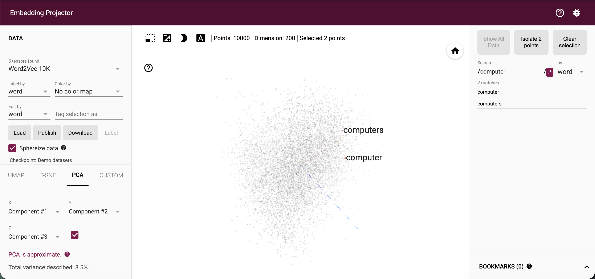
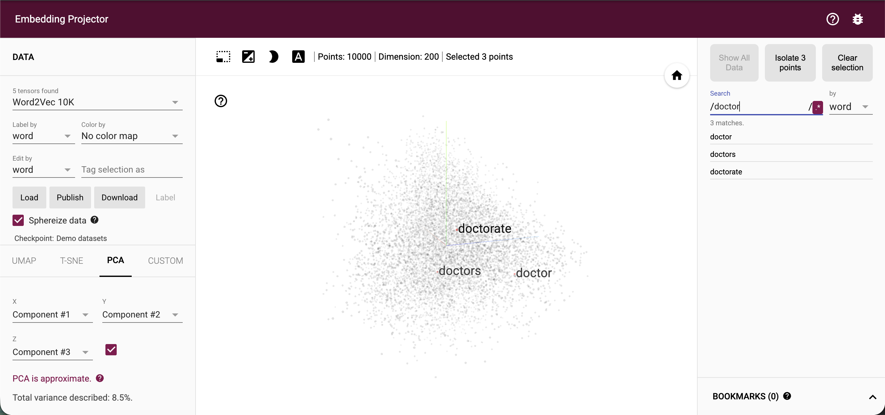
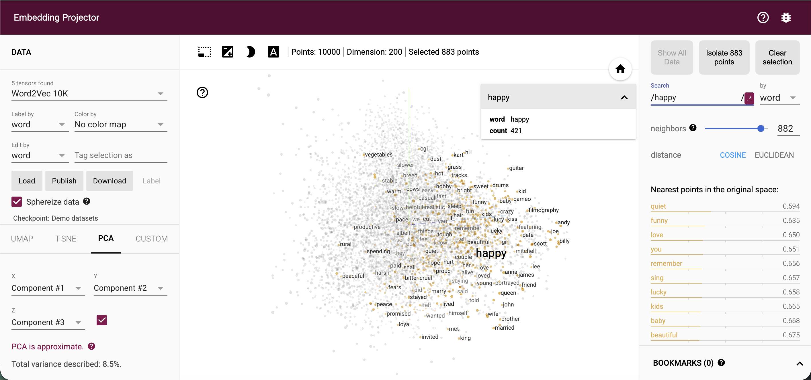
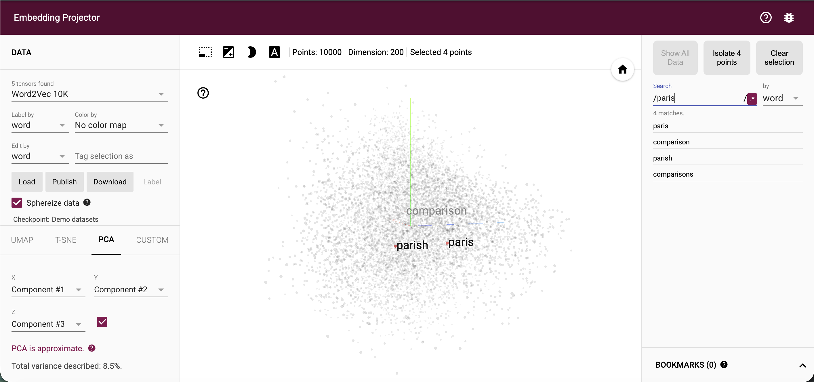

1. Introduction: What Are Embeddings?
Machine learning models work with numbers, not words, images, or products. An embedding is a way of turning an item into a list of numbers, called a vector, so that a model can compare it with other items. Each vector is a point in a high-dimensional space. The Word2Vec model used in the Embedding Projector, for example, represents each word with 200 numbers, so every word becomes a point in a 200-dimensional space.
What makes embeddings useful is that position carries meaning. During training, the model learns to place items that appear in similar contexts close together and items used in different contexts far apart. "Doctor" ends up near "nurse" and "hospital" because those words appear in similar sentences, not because anyone programmed that link. Closeness is usually measured with cosine similarity or Euclidean distance, which lets a program answer questions such as "which words are most similar to this one?"
Embeddings matter because they let models generalize. A text classifier can treat "excellent" and "outstanding" as similar even if it saw only one of them in training. Recommendation systems use embeddings of users and products to suggest items similar to what someone already likes, and image recognition systems embed pictures so that similar images land near each other. Language models, search engines, and retrieval-augmented generation (RAG) systems all depend on embeddings to find relevant information by meaning rather than exact keyword match.
People cannot picture 200 dimensions, so tools like the TensorFlow Embedding Projector use dimensionality reduction (PCA, t-SNE, or UMAP) to project the vectors into two or three dimensions. This assignment uses that tool to look at how a set of words is arranged and what the neighborhoods reveal.
2. Method
I opened the TensorFlow Embedding Projector (projector.tensorflow.org) and loaded the Word2Vec dataset.
| Dataset | Word2Vec 10K (10,000 points, 200 dimensions) |
| Projection | PCA, components 1–3 in a 3D view (total variance described: 8.5%) |
| Sphereize data | On |
| Distance metric | Cosine |

Figure 1 shows the whole dataset before any search. For each word below, I typed it into the Search box, selected the matching point, and recorded the nearest neighbors the Projector listed in the right-hand panel, along with the cluster shape I saw in the visualization. I chose the words to cover different kinds of meaning: a title, a technology term, a profession, an emotion, and a place.
3. Exploration and Observations
3.1 Search term: "king"
I chose "king" as a person/title word, to test whether related roles (queen, prince, emperor) cluster together.

| Group | Words visible in Figure 2 | What it shows |
|---|---|---|
| Related in meaning to "king" | king, kings, kingdom, kingdoms, viking, vikings, buckingham | Royalty and history words; they appear in the left half of the view |
| Share only the letters "king" | making, working, taking, speaking, looking, thinking, breaking, seeking, drinking, striking, cooking, tracking, blocking, checking, smoking, linking, walking, lacking, ranking, banking, networking | Matched by spelling only; these are grammatical -ing forms |
| Total | 33 matches reported by the Projector (28 visible in the screenshot) | The Search box finds any word containing "king" |
3.2 Search term: "computer"
I chose "computer" as a technology word, to see how closely related forms of the same word sit together.

| Group | Words in Figure 3 | What it shows |
|---|---|---|
| Matches for "computer" | computer, computers | Two forms of the same word; both are highlighted |
| Position in the view | computer and computers sit very close together in the lower-left region | Singular and plural share almost the same vector |
3.3 Search term: "doctor"
I chose "doctor" as a profession word, to see whether related roles or titles cluster together.

| Group | Words in Figure 4 | What it shows |
|---|---|---|
| Matches for "doctor" | doctor, doctors, doctorate | Three related forms; doctor and doctors are labeled side by side |
| Position in the view | doctor and doctors are labeled side by side in the lower-right region; doctorate is nearby but slightly above | Inflected forms cluster tightly; a derived form (doctorate) sits close but not identical |
3.4 Search term: "happy"
I chose "happy" as an emotion word, to see which words share its neighborhood and whether they are synonyms.

| Rank | Neighbor | Distance |
|---|---|---|
| 1 | quiet | 1.191 |
| 2 | funny | 1.194 |
| 3 | love | 1.194 |
| 4 | lucky | 1.196 |
| 5 | beautiful | 1.197 |
| 6 | remember | 1.198 |
| 7 | kids | 1.198 |
| 8 | wonderful | 1.199 |
| 9 | enjoy | 1.199 |
| 10 | you | 1.199 |
3.5 Search term: "paris"
I chose "paris" as a place word, to see how it compares with similarly spelled words.

| Group | Words in Figure 6 | What it shows |
|---|---|---|
| Matches for "paris" | paris, parish, comparison, comparisons | Four matches; "comparison" and "comparisons" contain the letters "paris" inside a longer word |
| Position in the view | paris and parish are labeled side by side at about the same height in the lower middle; comparison sits above them near the center | Paris and parish sit close together even though only one is a city name |
3.6 Patterns across all searches
Across the five searches, the Search box returned spelling matches, so each word came back with its variants: king with kings and kingdom, computer with computers, doctor with doctors and doctorate, and paris with parish. Where an inflected pair appeared (computer and computers, doctor and doctors, paris and parish), the two points sat close together in the PCA view, which suggests that words with similar forms and similar contexts land in the same region. Words that matched only through hidden letters, such as making for "king" or comparison for "paris," were not grouped with them.
The only true nearest-neighbor list I captured was for "happy," and it showed that neighbors are organized by shared context (funny, love, lucky, kids) rather than strict synonymy, since "quiet" and "you" ranked among the closest. Frequency in the training text probably matters as well: "happy" (421 occurrences) has far less evidence behind it than "computer" (5,874) or "king" (7,456).
Finally, the 3D PCA view describes only 8.5% of the variance, so every position described here is approximate.
4. Reflection
Exploring the Embedding Projector made "meaning as position" concrete. Related forms such as computer and computers or doctor and doctors landed near each other, and the neighbors of "happy" (funny, love, lucky, kids, beautiful) showed that the model groups words by the contexts they share. Surprisingly, the closest neighbor of "happy" was "quiet," and words like "you" and "remember" appeared too, so embeddings capture association rather than strict synonymy.
I also learned to read the tool carefully. The Search box matches spelling, so "king" returned making and working, and only the nearest-neighbor list reflects similarity in meaning. The PCA view squeezes 200 dimensions into three and describes only 8.5% of the variance, so distances on screen are approximate. Word frequency matters too: "happy" appears 421 times against 7,456 for "king," which may make its vector less reliable.
For applications such as search and retrieval-augmented generation, this means embeddings are powerful but should be checked, because they inherit the patterns and gaps of their training text.
References
Google for Developers. (n.d.). Embeddings. Machine Learning Crash Course. https://developers.google.com/machine-learning/crash-course/embeddings
Smilkov, D., Thorat, N., Nicholson, C., Reif, E., Viégas, F. B., & Wattenberg, M. (2016). Embedding Projector: Interactive visualization and interpretation of embeddings. arXiv. https://arxiv.org/abs/1611.05469
TensorFlow. (n.d.). Embedding Projector. https://projector.tensorflow.org/